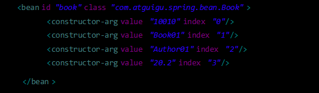
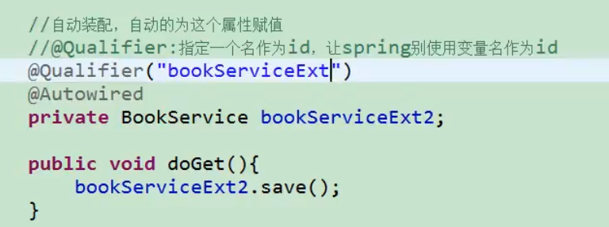
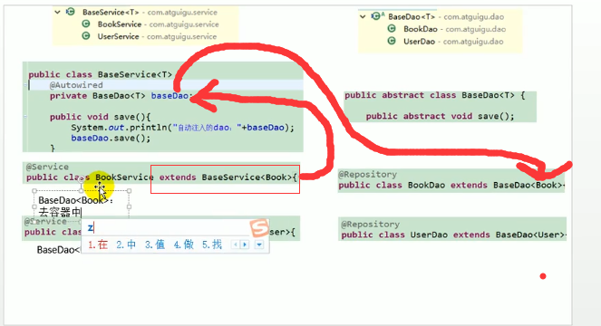
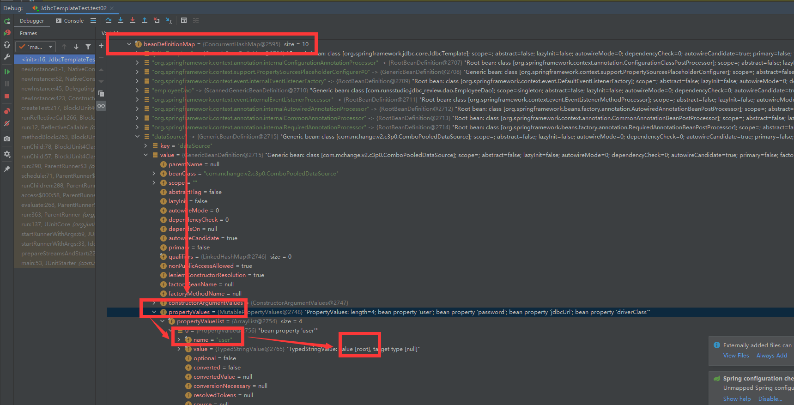

Spring MVC REVIEW
本项目是对SPRING的复习，配合B站雷神视频https://www.bilibili.com/video/BV1uE411C7CW?from=search&seid=344005634667549772
day01 hello world
需要注意的事项
- 把一个普通JAVA项目变成WEB项目：
https://jingyan.baidu.com/article/08b6a591681e5414a8092212.html - 把一个普通WEB项目变成Spring项目：
File → Project structure → Modules
点加号 添加Spring 然后版本选4.3.18
然后他会让选择导到哪个文件夹下，选lib
这一步也可以自己拷贝包到lib目录下 - 然后到WEB-INF文件夹底下查看创建的applicationContext.xml
往beans标签下添加bean - 然后新建一个JUnit test 方法是：
https://blog.csdn.net/dongzhensong/article/details/89450823 - 创建细节：iocTest.xml要放在src文件夹下，然后
ApplicationContext ioc=new ClassPathXmlApplicationContext("iocTest.xml");
不然会找不到类路径报错 这是因为src（源码包开始的路径）也被称为类路径的开始
如果不想放在src文件夹下，需要在 File → Project structure 里面 把WEB-INF文件夹作为资源目录，这样的话，打开项目文件夹，比如
E:\IdeaProjects\Spring-MVC-review\out\production\Spring-MVC-review（这个文件路径等同类路径开始）
在这个文件夹地下可以看到WEB-INF 表示编译的文件，然后里面就可以找到applicationContext.xml 这样的话 我们也可以写成这样也是可以的 和上面效果也是一样的1
2
3
4
5
6//1.创建IOC容器对象
ApplicationContext ioc=new ClassPathXmlApplicationContext("/WEB-INF/applicationContext.xml");
//2.根据id值获取bean实例对象
Person person01 =(Person) ioc.getBean("person01");
//3.打印bean
System.out.println(person01); - 最后 如果不用类路径，而是想用绝对路径的话 可以这么写：
ApplicationContext ioc=new FileSystemXmlApplicationContext("E:\\IdeaProjects\\Spring-MVC-review\\web\\WEB-INF\\applicationContext.xml"); - 对象是什么时候创建的呢？答案是创建IOC容器对象的时候就已经创建好了。并且是先创建好所有对象，再启动容器
- 容器启动之前 就创建好单实例的（默认是单实例） 也就是说如果让p1=ioc.getBean(“person01”); p2=ioc.getBean(“person01”); 则p1==p2 true
- ioc容器创建对象的时候，会调用set方法给属性赋值。setter决定了对象的属性名，千万还是要自动生成 不要自己改 不然会报错
day 02 实验
实验2
1 | /*实验2：根据bean的类型从IOC容器中获取bean的实例 |
实验3 调用有参构造器：
在iocTest.xml里bean标签下用
写几个就是调用几个的构造器
可以省略name属性 如果省略的话 就是按照顺序制定的

使用p名称空间命名:需要在xml开头加上：xmlns:p=”http://www.springframework.org/schema/p"
1 |
|
Spring允许继承bean的配置，被继承的bean称为父bean。继承这个父bean的bean称为子bean
子bean从父bean中继承配置，包括bean的属性配置
子bean也可以覆盖从父bean继承过来的配置
1 | <!-- 以emp01作为父bean，继承后可以省略公共属性值的配置 --> |
实验6/7 通过继承实现bean配置信息的重用 通过abstract属性创建一个模板bean
Spring允许继承bean的配置，被继承的bean称为父bean。继承这个父bean的bean称为子bean
子bean从父bean中继承配置，包括bean的属性配置
子bean也可以覆盖从父bean继承过来的配置
父bean可以作为配置模板，也可以作为bean实例。若只想把父bean作为模板，可以设置
如果一个bean的class属性没有指定，则必须是抽象bean
并不是
也可以忽略父bean的class属性，让子bean指定自己的类，而共享相同的属性配置。但此时abstract必须设为true。
**如果调用了抽象bean 会报 bean is abstract **
实验9 bean作用域 用scope=”…“指定
一共有四个：prototype 、 singleton 、 request、session
后两个没啥用 就前两个比较有用
当bean的作用域为单例时，Spring会在IOC容器对象创建时就创建bean的对象实例。而当bean的作用域为prototype时，IOC容器在获取bean的实例时创建bean的实例对象。
实验5 工厂模式
什么是工厂模式？有一个专门创建对象的类 就叫工厂类
工厂类有两种 静态工厂和实例工厂。
- 静态工厂：（静态方法调用）调用静态工厂方法创建bean是将对象创建的过程封装到静态方法中。当客户端需要对象时，只需要简单地调用静态方法，而不用关心创建对象的细节。
- 实例工厂：（需要new一个工厂）将对象的创建过程封装到另外一个对象实例的方法里。当客户端需要请求对象时，只需要简单的调用该实例方法而不需要关心对象的创建细节。
Day03
试验12 外部配置文件链接据库连接池
首先xml里面配置数据源，首先导入命名空间
1 | xmlns:context="http://www.springframework.org/schema/context" |
然后用context:property-placeholder 来引入外部的配置文件
这里的配置文件可以是绝对路径 也可以是classpath:开始的路径
然后就可以用${}来引用配置文件（这里使用的conf/dbconfig.properties）的数据了
1 | <!--实验12 引用外部属性文件:需要依赖context名称空间--> |
注意：
** 引入context命名空间的时候 报错 **
1 | 信息: Loading XML bean definitions from class path resource [iocDatabaseProperties.xml] |
解决方法：
https://www.cnblogs.com/ttflove/p/6351345.html
补充 源码文件夹（Source）和普通文件夹的区别
源码文件夹不会在项目的bin目录（就是classpath）下编译 也就是说如果文件夹不是源码文件夹 就找不到普通文件夹
注意 lib文件夹 不要设为源码文件夹 不然会把jar包全编译了
试验15 通过注解创建Model View Controller
三句话 简略讲讲MVC
- Model就是模型 就是bean
- View 就是视图 表示的是jsp页面
- Controller 就是控制器，就是页面之间的跳转逻辑
Spring里面提供了四个注解 用来标注的
@Controller @Service @Repository @Component
在bean上标注注解 可以把bean加入容器 - @Controller — 对应servlet
- @Service —业务逻辑，
- @Repository === 仓库的意思 一般给持久层 dao层添加
- @Component —组件的意思 给不确定的层添加 一般给utils添加 给不属于以上几层的添加
注意 加了注解之后还要在context名称空间里面扫描组件 让spring自动扫描组件<context:component-scan base-package="com.runsstudio.ioc_review"/>
要想使用这个注解的功能 一定要加入spring的aop包
Autowired原理：按照类型在容器里查找 找到就赋值 ，没找到就抛出异常，如果找到多个，则装配上
找到多个的话找的方法如下：
1. 按照变量名id匹配
2. 如果根据变量名id匹配不上的话 可以使用@Qualifier注解明确指定目标bean的id
默认情况下，当IOC容器里存在多个类型兼容的bean时，Spring会尝试匹配bean的id值是否与变量名相同，如果相同则进行装配。如果bean的id值不相同，通过类型的自动装配将无法工作。此时可以在@Qualifier注解里提供bean的名称。Spring甚至允许在方法的形参上标注@Qualifiter注解以指定注入bean的名称。

默认容器是一定要找到 找不到就抛出异常 可以用@Autowired(require=false)
自动装配的注解
自动装配的注解可以写很多 比如@Autowired @Resource @Inject
区别：只有@Autowired最强大 他是Spring自己的注解
@Resource是java的标准，功能一般
区别：@Resource 可以用在非spring项目中 扩展性更强
@Autowired最强大仅限spring框架
spring单元测试
请参考SpringTest.java
实验23 泛型依赖注入☆
这个主要是存在泛型的时候用的
比如说存在一个BaseDao
这个时候也可以自动注入
自动装配可以找到泛型的对象

这是因为泛型创建的时候就已经创建了
BaseDao<Book> 或者 BaseDao<User>** 泛型依赖注入指的是(注入组件的时候，他的泛型也是参考的标准) **
IOC总结
- 容器中包括了所有的bean
- 容器到底是什么？答案：容器就是一个map
IOC的创建过程 源码讲解：
首先是从ApplicationContext ioc=new ClassPathXmlApplicationContext("iocDatabaseProperties.xml");这一句开始点开refresh()：1
2
3
4
5
6
7
8public ClassPathXmlApplicationContext(String[] configLocations, boolean refresh, ApplicationContext parent) throws BeansException {
super(parent);
this.setConfigLocations(configLocations);
if (refresh) {//在这里创建所有单实例的bean
this.refresh();
}
}进一步的 我们观察1
2
3
4
5
6
7
8
9
10
11
12
13
14
15
16
17
18
19
20
21
22
23
24
25
26
27
28
29
30
31
32
33
34
35public void refresh() throws BeansException, IllegalStateException {
synchronized(this.startupShutdownMonitor)/*同步锁 保证容器只创建一次*/ {
this.prepareRefresh();
ConfigurableListableBeanFactory beanFactory = this.obtainFreshBeanFactory();//spring解析xml，这步之后xml就没啥用了，把xml解析过来 然后准备创建
this.prepareBeanFactory(beanFactory);//创建一个bean工厂，会报Loading XML bean definitions from class path resource[XXX.xml]
try {
this.postProcessBeanFactory(beanFactory);
this.invokeBeanFactoryPostProcessors(beanFactory);//执行bean工厂后置处理器
/* // 注册 BeanPostProcessor 的实现类，注意看和 BeanFactoryPostProcessor 的区别
// 此接口两个方法: postProcessBeforeInitialization 和 postProcessAfterInitialization
// 两个方法分别在 Bean 初始化之前和初始化之后得到执行。注意，到这里 Bean 还没初始化*/
this.registerBeanPostProcessors(beanFactory);
this.initMessageSource();//支持国际化功能的
this.initApplicationEventMulticaster();//初始化事件转化器 处理创建过程中的事件
this.onRefresh(); // 专门留给子类继承的，是一个孔方法
this.registerListeners(); // 注册一些内部监听器
this.finishBeanFactoryInitialization(beanFactory); //完成bean工厂的初始化，在这一步创建所有bean
this.finishRefresh();
} catch (BeansException var9) {
if (this.logger.isWarnEnabled()) {
this.logger.warn("Exception encountered during context initialization - cancelling refresh attempt: " + var9);
}
this.destroyBeans();
this.cancelRefresh(var9);
throw var9;
} finally {
this.resetCommonCaches();
}
}
}this.finishBeanFactoryInitialization(beanFactory);方法，点击跳进去他的方法，会进入AbstractApplicationContext.class再进入1
2
3
4
5
6
7
8
9
10
11
12
13
14
15
16
17
18
19
20
21
22
23
24
25
26
27
28
29
30protected void finishBeanFactoryInitialization(ConfigurableListableBeanFactory beanFactory) {
/*初始化类型转化*/
if (beanFactory.containsBean("conversionService") && beanFactory.isTypeMatch("conversionService", ConversionService.class)) {
beanFactory.setConversionService((ConversionService)beanFactory.getBean("conversionService", ConversionService.class));
}
/*初始化加载时的自动注入的*/
if (!beanFactory.hasEmbeddedValueResolver()) {
beanFactory.addEmbeddedValueResolver(new StringValueResolver() {
public String resolveStringValue(String strVal) {
return AbstractApplicationContext.this.getEnvironment().resolvePlaceholders(strVal);
}
});
}
String[] weaverAwareNames = beanFactory.getBeanNamesForType(LoadTimeWeaverAware.class, false, false);
String[] var3 = weaverAwareNames;
int var4 = weaverAwareNames.length;
for(int var5 = 0; var5 < var4; ++var5) {
String weaverAwareName = var3[var5];
this.getBean(weaverAwareName);
}
beanFactory.setTempClassLoader((ClassLoader)null);
beanFactory.freezeConfiguration();
/*真正初始化单实例bean 是下面这个方法*/
beanFactory.preInstantiateSingletons();
}beanFactory.preInstantiateSingletons();位于DefaultListableBeanFactory.class总之 最后创建出来的对象，保存在一个map（beanFactory->beanDefinitionMap）里1
2
3
4
5
6
7
8
9
10
11
12
13
14
15
16
17
18
19
20
21
22
23
24
25
26
27
28
29
30
31
32
33
34
35
36
37
38
39
40
41
42
43
44
45
46
47
48
49
50
51
52
53
54
55
56
57
58
59
60
61
62
63
64
65
66
67public void preInstantiateSingletons() throws BeansException {
if (this.logger.isDebugEnabled()) {
this.logger.debug("Pre-instantiating singletons in " + this);
}
/*首先拿到bean的名字*/
List<String> beanNames = new ArrayList(this.beanDefinitionNames);
Iterator var2 = beanNames.iterator();
while(true) {
while(true) {
String beanName;
RootBeanDefinition bd;
do {
do {
do {
if (!var2.hasNext()) {
var2 = beanNames.iterator();
while(var2.hasNext()) {
beanName = (String)var2.next();
Object singletonInstance = this.getSingleton(beanName);
if (singletonInstance instanceof SmartInitializingSingleton) {
final SmartInitializingSingleton smartSingleton = (SmartInitializingSingleton)singletonInstance;
if (System.getSecurityManager() != null) {
AccessController.doPrivileged(new PrivilegedAction<Object>() {
public Object run() {
smartSingleton.afterSingletonsInstantiated();
return null;
}
}, this.getAccessControlContext());
} else {
smartSingleton.afterSingletonsInstantiated();
}
}
}
return;
}
beanName = (String)var2.next();
bd = this.getMergedLocalBeanDefinition(beanName);
} while(bd.isAbstract());
} while(!bd.isSingleton());
} while(bd.isLazyInit());/*不是抽象的、不是单例的、不是懒加载的*/
if (this.isFactoryBean(beanName)) {/*如果是工厂bean*/
final FactoryBean<?> factory = (FactoryBean)this.getBean("&" + beanName);
boolean isEagerInit;
if (System.getSecurityManager() != null && factory instanceof SmartFactoryBean) {
isEagerInit = (Boolean)AccessController.doPrivileged(new PrivilegedAction<Boolean>() {
public Boolean run() {
return ((SmartFactoryBean)factory).isEagerInit();
}
}, this.getAccessControlContext());
} else {
isEagerInit = factory instanceof SmartFactoryBean && ((SmartFactoryBean)factory).isEagerInit();
}
if (isEagerInit) {
this.getBean(beanName);
}
} else {
this.getBean(beanName);/*所有bean的创建，这个方法就有点长了，大概含义是 先检查缓存，缓存里有从缓存里拿bean 创建之后标记bean被创建防止bean被创建多次*/
}
}
}
}
面试题：BeanFactory和ApplicationContext的区别
- beanFactory最底层的接口（bean工厂接口），负责创建bean实例，这个接口里面保存了各种各样的bean，保存的单例bean实际上是保存在map中
- applicationContext是容器接口，更多的负责容器功能的实现，applicationContext创建的对象里包含了beanFactory，applicationContext还是先了AOP DI
spring里面最大的模式是什么？
工厂模式：帮用户创建bean